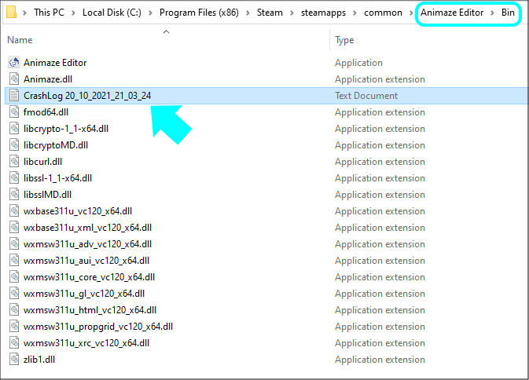
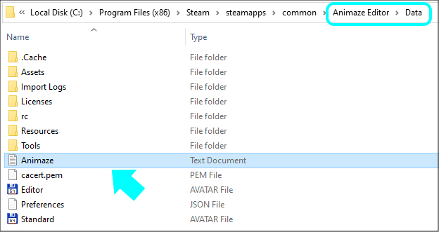

Troubleshoot & Support
In case any issues arise in the importing process part or any other, you can send us the application logs and we will gladly help you out.
Write us an email at support@animaze.us, along with the Animaze Editor logs attached.
Here is where you find the needed logs:
1. Navigate to the installation folder of the Animaze Editor, open the Bin/ directory and find the CrashLog_date_of_the_crash.txt document.

2. Now navigate to the Data/ directory of Animaze Editor and find the Animaze.log file
Keep in mind that the Animaze.txt file will have its content replaced once you re-open the Editor, so if you encounter any crashes, please copy the Animaze.log file in a different location/folder right after the crash.

3. The Data/ directory also contains logs for each imported item in the Import Logs/. Send us the one for the item you need troubleshoot with.